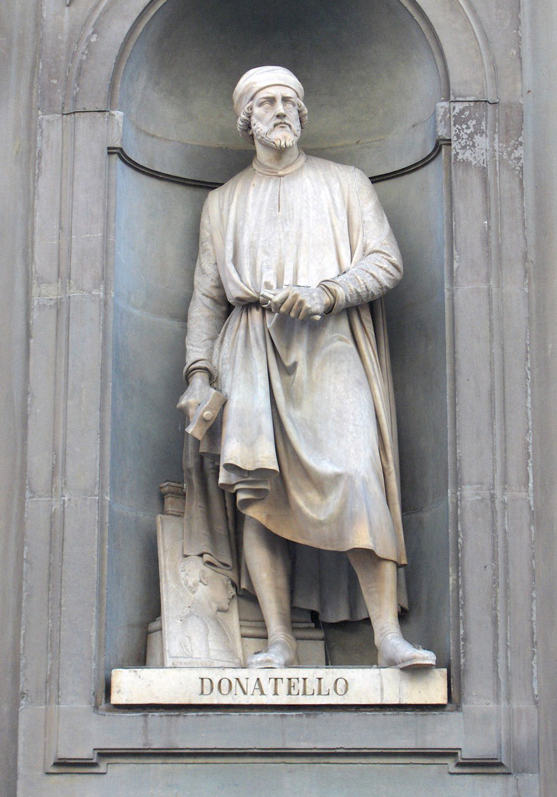
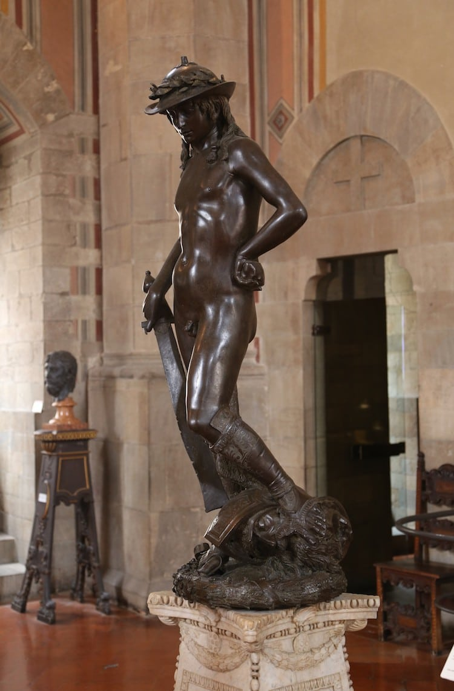

Донателло
Донателло (Donatello, повне ім'я Донато ді Нікколо ді Бетто Барді італ. Donato di Niccolo di Betto Bardi; біля 1386 — 13 грудня 1466, Флоренція) — один з найвідоміших італійських скульпторів епохи Відродження, основоположник індивідуалізованого скульптурного портрету.
«Давид»
«Давид» - бронзова статуя роботи Донателло; перше зображення оголеної фігури, що вільно стоїть з часів античності. Точна дата створення скульптури невідома. Більшість дослідників відносять її до періоду між 1430 і 1440 рр., Хоча не виключається і пізніше датування, аж до 1460-х років. Перша документована згадка про Давида відноситься до 1469 року: в цьому році Лоренцо Чудовий одружився з Клариче Орсіні, і статуя в цей час перебувала у внутрішньому дворику Палаццо Медічі. Передбачається, однак, що вона потрапила туди кілька років до того, в 1450-х або 1460-х рр.
Згідно Дж. Вазарі, статуя Давида була створена на замовлення Козімо Медічі, але достовірними ці відомості вважати не можна. Вазарі також дає опис п'єдесталу, що не зберігся, на якому була розташована статуя. Автором п'єдесталу був Дезидерио да Сеттіньяно. У 1495 році, після вигнання Медічі з Флоренції, статуя була перенесена в Палаццо Веккьо. З 1738 року (деякі історики називають 1777 рік) вона перебувала в галереї Уффіці. У 1865 році було засновано Національний музей Барджелло, і в другій половині XIX століття Давид зайняв місце серед його експонатів. Давид Донателло не схожий на традиційні зображення біблійного героя. Відрізняється він і від більш ранньої статуї роботи самого Донателло, виконаної з мармуру. Бронзовий Давид - майже хлопчик з гнучким, юнацьким тілом і довгим волоссям. Він абсолютно голий, якщо не брати до уваги крислатий пастушачий капелюх, увінчаний лавровим вінком, і сандалій з поножами. Вільна поза героя - приклад контрапоста: тяжкість тіла спочиває на правій нозі, в той час як лівою, напівзігнутою, він підпирає голову переможеного ним Голіафа. Тіло юнака злегка відхилене від центральної осі; діагональ меча, на який спирається переможець, підкреслює нестійкість і внутрішню динаміку фігури. В лівій руці він тримає камінь від пращі- знаряддя перемоги. Статуя розрахована на обхід навколо і огляд з усіх точок зору; при цьому світлові відблиски на поверхні бронзи акцентують увагу то на одному, то на іншому вигині цього граціозного тіла, підкреслюючи просторовий характер композиції.